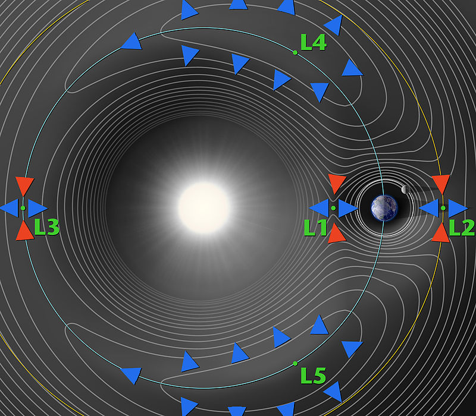

按照《太阳系和平开发与利用公法》（简称系法）中关于飞船驾驶的有关规定，货运飞船可在无人驾驶的情况下按照预定航线进行自主飞行，并由引航员进行远程跟踪与遥控。而对于载人飞船，为了保障乘客的安全，至少需要配备一名合格的飞船驾驶员。
随着地火航线及其他周边航线的开通，对于载人飞船的需求量逐年上升。此外，购买私人飞船也在富人圈子中也流行起来。不过，由于飞船的驾驶需要特定的训练和认证，很多人都不想花费太多的精力来取得飞船驾驶执照，而是选择聘请专业的飞船驾驶员。
UPI旗下的太空捷运公司（Space Express Company）拥有数量众多的飞船驾驶员，还提供驾驶员培训服务。而飞船驾驶员的资格认证则必须前往星际移民局下属的星际运输中心轨道运输部资格认证处。
基本上所有现役载人飞船的驾驶单元均设有识别装置，只有取得相关资质的飞船驾驶员才能够启动飞船。
飞船市场越来越大，私人飞船也越来越多，特别是往返于火星表面和绕火轨道之间的私人飞船急剧增加，而飞船的定期检修需要专业的飞船检修员来完成。
The Benny Company 是第一家飞船检修公司，该公司一直到 23 世纪初都是拥有最多的店面和员工的飞船检修公司。在该行业刚刚起步的时候，飞船检修员特指飞船检修中指导大家进行检修的人员，对他们的电子、机械、推进等等各种专业知识要求非常高。伴随着技术的进步，飞船检修工具也变得非常容易操作，一艘小型飞船的检修一个人就可以完成，飞船检修员也不再特指检修小组组长，而是指那些操作检修机器的工作人员。
货运飞船通常不需要配备飞船驾驶员，不过按照系法规定，在货运飞船进行起飞、降落、变轨等重要操作时，必须至少要有一名引航员进行监测和必要时的控制。在同一艘货运飞船航行的不同阶段，引航员通常会进行更换，更换依据“最短光秒”原则，这是为了将引航员与飞船间的控制时差降到最低。
对于地火货运航线，通常只需要地球、火星各一名引航员就足够了。而对于近地小行星航线，因为不可能在所有小行星矿场上都配备引航员，所以一般会在一些特殊的地方设立监测站，三个最大的监测站分布在地日L3、L4、L5点，其余的监测站分布在一些资源丰富、货运量大的小行星上。

太空重型机械虽然大多实现自动化，但是某些机械依然需要人的控制，特别是体型庞大而笨重的重型机械。另外，对于小行星矿场这样的重型机械集中的地方，虽然自动化生产已经实现，但是值班员也必须在监控室实时监控，一旦出现故障，可以及时处理。
小行星采矿行业在发展的高峰时期，曾经使用过巨无霸挖掘机，这些挖掘机虽然可以进行自动化挖掘工作，但是在一些具体的细节上需要一些远程控制操作。在小型载人飞船真正发展起来之前，太空重型机械操作员大多是在地球、火星或者空间站中对机械进行遥控操作的。各种类型的太空机械的出现，也使得太空重型机械操作员越来越多。 而后来的重型机械操作员，很多已经在机械的现场工作了。
随着航天器、空间站和小行星工厂的增多，选择一条合适的太空航行轨道要考虑到发射窗口、燃料消耗、航行时间、飞行安全、运输成本等等诸多因素，这一切都属于轨道设计、规划与调度工作。
需要清扫的太空垃圾一般仅包括地球轨道与火星轨道报废的航天器，虽然转移轨道上也会有少量太空垃圾，但是由于星际空间过于广阔，转移航行时遭遇太空垃圾的几率比中“星球彩”特等奖的几率还小。
不过，地球与火星周围的情况却远没有这么乐观，如果不对太空垃圾进行清扫，轨道上运行的航天器将受到威胁。
净伞科技是太空垃圾清扫行业的起步者。最早的垃圾清扫采用轨道撒网、清扫器捕捉等方法，效率十分低下，并且无法清理尺寸较小的太空垃圾。
净伞科技最先采用“高能激光定向烧蚀”的技术来大规模地清理太空垃圾，在激光的作用下，尺寸较小的太空垃圾很快气化，而尺寸较大的太空垃圾在经过回收处理后，反而成了太空3D打印工厂的原料。
太空中有多个救援中心空间站，为了保障航行安全，在对飞船进行轨道设计与规划时，一般还要考虑到沿途救援中心的位置。
太空救援是高薪酬的职业，这并不是因为太空航行的事故率较高，而是因为救援的成本太大。从接到救援任务，到确定待救援飞船的位置，再到救援船到达事故地点并完成救援，一次救援工作的成本可能比一次航行的成本还要高。
太空救援一般分为人员救援与货物救援，救援的花费一般由相应的保险公司承担。对于人员救援来说，营救时间最为关键，要想快速接近事故飞船，就需要相当多的燃料，这些燃料比普通转移飞行所耗费的燃料要多得多。因此，救援中心的飞船都配备了最为强劲的引擎以及充足的燃料，以适应不同情况下的各种救援任务。